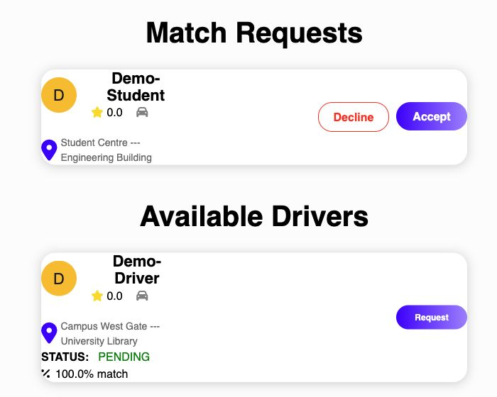
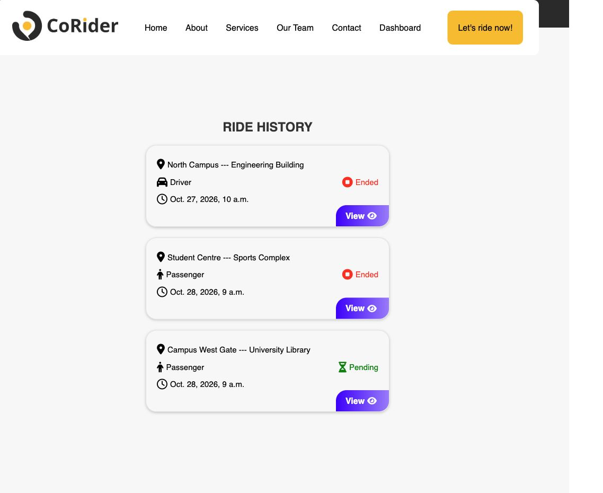

Shared journeys.
Smarter matches.
A campus carpooling prototype that helps students find people travelling along similar routes, send ride requests, and keep track of their trips.
- My role
- Full-stack developer
- Context
- Personal project · Prototype
- Built with
- Python · Django · Mapbox
The problem
A shared destination
is only part
of the journey.
Students may be heading to the same campus but starting from different places. A useful carpool match needs to consider where their journeys overlap, then give both people a way to coordinate.
I built CoRider around that sequence: choose a trip, find candidates from route data, send or respond to a request, and track the ride through its lifecycle.
Inside the product
From a possible match
to a shared ride.
Actual screens from the original Django application, running locally with fictional users and trips. Select either screenshot to view it at full size.

Review candidates and respond to incoming requests. The displayed score comes from synthetic demo routes.

Keep the route, role, date, and status together, with a link back to each ride.
Actual application · Synthetic demo data · No real rider records
What I built
Maps, matching,
and the steps
in between.
- 01
Map-based trip selection
Connected Mapbox maps and directions with a Django backend. Trips store their origin, destination, route coordinates, and driver or passenger role so the matching step has more context than a destination name.
- 02
A geographic matching heuristic
The Python matcher compares sampled points from two routes, using a Haversine-distance threshold. It scores the fraction of points on the shorter route that have a nearby point on the other route. The candidate filter uses a score of 40% or higher.
- 03
Requests and ride state
Built the Django models and views for users, rides, requests, and reviews. Drivers and passengers can accept or decline requests; accepted requests connect the trips and update their status. Ride history preserves the route, role, date, and state.
What I learned
A matching score
is a starting point.
The project brought together geographic data, backend logic, and a workflow people can act on. Running the original application with synthetic records confirmed candidate display, incoming requests, trip history, and the transition after accepting a request.
Point overlap alone does not account for departure times, travel direction, available seats, or the cost of a detour. Those are the next constraints I would add, alongside stronger validation and a matching approach that scales beyond comparing every pair of route points.
CoRider is a personal prototype. Payments and in-app messaging remain future work; the screenshots demonstrate the local application, not a publicly operated ride service.
Django ORM · Route data · Request workflows · Mapbox
Explore the implementation
Explore the code.
See the original CoRider project on GitHub.